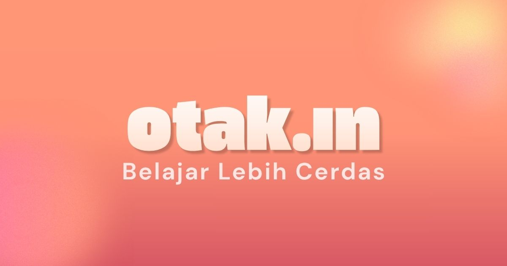

Mahasiswa semester 1 S1 Sistem Informasi di Universitas Subang dengan
latar belakang pendidikan Teknik Komputer dan Jaringan (TKJ). Senang mempelajari teknologi web,
logika pemrograman, dan eksplorasi desain kreatif secara mandiri.
Mengenal lebih dekat latar belakang, ketertarikan, dan motivasi belajar saya.
Saya adalah mahasiswa Sistem Informasi yang memiliki ketertarikan mendalam pada dunia
teknologi, khususnya pengembangan web, pemrograman komputer, dan infrastruktur teknologi informasi.
Memiliki latar belakang pendidikan formal dari SMKN 1 Subang pada kompetensi keahlian
Teknik Komputer dan Jaringan (TKJ), serta sudah mulai mengenal dasar-dasar logika
pemrograman sejak masa sekolah dasar.
Saya sangat senang mempelajari hal-hal baru, mengeksplorasi ekosistem teknologi terkini, membangun proyek
digital sederhana, serta terus mengasah kemampuan teknis secara mandiri.
Selain bidang teknologi, saya juga memiliki ketertarikan pada bidang kreatif seperti
desain grafis, menggambar digital, produksi musik, dan video editing.
Status Akademik: Saat ini sedang menempuh pendidikan semester 1 di Fakultas Ilmu
Komputer, Universitas Subang, dengan tekad untuk terus berkembang di bidang teknologi informasi.
Keahlian & Minat
Skills & Kemampuan
Ringkasan kemampuan teknis dan kreatif yang sedang terus saya kembangkan.
code
Web Development
> HTML
Menyusun struktur dokumen web semantik dengan standar HTML5.
> CSS
Pengelolaan tata letak modern menggunakan Flexbox, CSS Grid, dan variabel.
> JavaScript
Manipulasi DOM, validasi formulir, dan event handling interaktif dasar.
> React.js
Mempelajari konsep komponen antarmuka, props, dan state dasar.
> Responsive Web Design
Menyesuaikan tampilan situs agar rapi di layar smartphone, tablet, dan
desktop.
terminal
Programming & Tech
> Basic Programming
Pemahaman logika dasar alur pemrograman, percabangan, dan perulangan.
> Git & GitHub
Penggunaan version control dasar untuk mengelola repositori kode.
> Computer Networking
Konsep dasar jaringan komputer, pengalamatan IP, dan routing dasar dari
TKJ.
> Troubleshooting
Identifikasi dan pemecahan kendala teknis pada perangkat lunak maupun
keras.
palette
Creative
> Graphic Design
Eksplorasi pembuatan aset visual, komposisi warna, dan identitas digital.
> Digital Drawing
Hobi menggambar dan membuat sketsa digital dengan perangkat grafis.
> Video Editing
Penyuntingan video dasar, transisi, dan sinkronisasi audio untuk konten
digital.
> Music Production
Eksplorasi kreasi audio, instrumen virtual, dan sequencing musik digital.
Riwayat Studi
Pendidikan
Perjalanan akademis dan jenjang pendidikan yang telah dan sedang saya tempuh.
Universitas Subang
2024 — Sekarang (Semester 1)
S1 Sistem Informasi — Fakultas Ilmu Komputer
Sedang menempuh perkuliahan tingkat dasar dengan fokus pada Desain Web, Pemrograman Dasar, dan
Pengantar Teknologi Informasi.
Mempelajari fondasi arsitektur web dan antarmuka pengguna.
Mendalami penerapan sistem informasi dalam organisasi dan bisnis modern.
SMKN 1 Subang
Lulus
Teknik Komputer dan Jaringan (TKJ)
Mempelajari perakitan komputer, instalasi sistem operasi, konfigurasi LAN/WAN, routing dasar
MikroTik/Cisco, dan perawatan infrastruktur jaringan.
Praktik instalasi kabel UTP, konfigurasi switch, dan manajemen bandwidth.
Troubleshooting kendala jaringan lokal dan keamanan jaringan dasar.
Technology & ToolsTech Stack
No
Technology / Tools
Category
Purpose
01
HTML
Frontend
Struktur halaman web
02
CSS
Frontend
Styling dan layout website
03
JavaScript
Programming
Interaktivitas website
04
React.js
Frontend
Pengembangan antarmuka
05
Next.js
Framework
Pengembangan aplikasi web
06
Node.js
Runtime
Menjalankan JavaScript di server
07
NestJS
Backend
Pengembangan REST API
08
PostgreSQL
Database
Pengelolaan data relasional
09
Git & GitHub
Development Tools
Version control dan pengelolaan kode
10
Cloudflare
Infrastructure
Hosting dan layanan web
11
FL Studio
Creative Tools
Produksi dan pengolahan musik
Karya & Eksplorasi
Pengalaman & Proyek
Proyek nyata dan sarana eksplorasi mandiri yang saya kerjakan dalam perjalanan
belajar.

Featured Project
Otak.in — Platform Edukasi Digital
Proyek platform edukasi digital yang dirancang untuk persiapan UTBK dan TKA bagi calon mahasiswa.
Berfokus pada penyediaan materi pembelajaran interaktif dan latihan soal berkualitas secara gratis.
Dikembangkan secara mandiri dengan fokus pada performa web dan pengalaman pengguna yang nyaman.
Penyediaan modul ringkasan materi dan bank soal gratis.
Antarmuka web ramah gawai untuk belajar fleksibel di ponsel maupun laptop.
Pengembangan mandiri berbasis teknologi web modern.
Web DevelopmentEducationEdTechUI/UX
Eksplorasi
Personal Development & Eksplorasi Mandiri
Perjalanan berkelanjutan dalam mempelajari pemrograman dan rekayasa web secara mandiri. Mengeksplorasi
berbagai kakas (tools) pengembang, menguji tata letak responsif, menerapkan prinsip git version control,
serta membangun berbagai eksperimen antarmuka kecil untuk memperkuat pemahaman fundamental.
Implementasi konsep dasar web semantik dan clean styling.
Eksperimen DOM scripting dan dynamic theming pada JavaScript murni.
Dokumentasi catatan belajar dan repositori kode personal.
Self-TaughtProblem SolvingGitFrontend Basics
Dokumentasi
Galeri Foto
Dokumentasi aktivitas, lingkungan belajar, dan eksplorasi digital saya. Klik foto
untuk melihat pratinjau.
Kampus & Perkuliahan
Aktivitas pembelajaran di Fasilkom UNSUB.
Koding & Web Dev
Eksplorasi kode HTML, CSS, dan JavaScript.
Desain Grafis & Seni
Kreativitas visual dan ilustrasi digital.
Praktik Jaringan (TKJ)
Dasar infrastruktur jaringan di SMKN 1 Subang.
Kontak & Pesan
Hubungi Saya
Silakan kirimkan pertanyaan, saran, atau sekadar berdiskusi mengenai teknologi dan
perkuliahan.
Saluran Komunikasi
Saya terbuka untuk diskusi seputar tugas kuliah, pengembangan web dasar, atau pertukaran pengalaman
seputar dunia teknologi informasi.